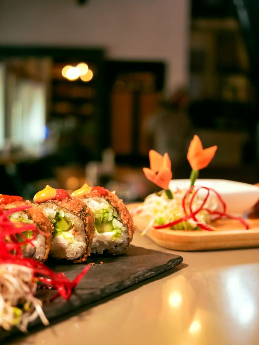
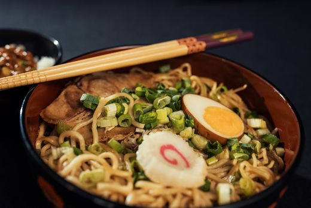
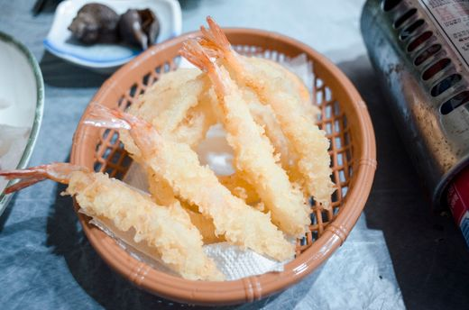
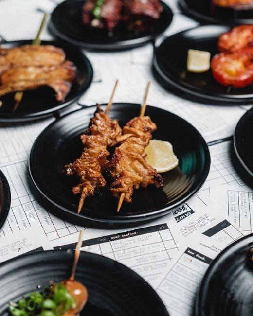
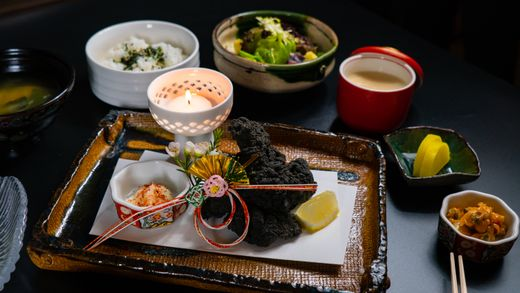
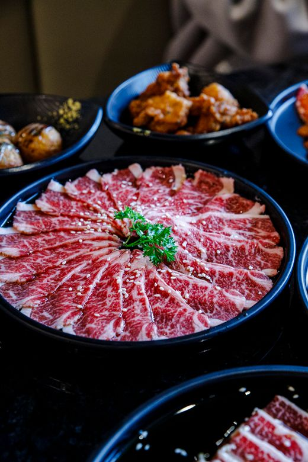
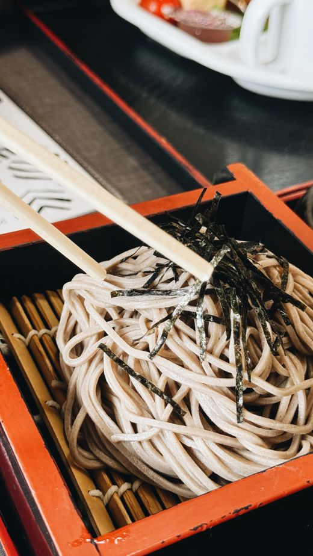
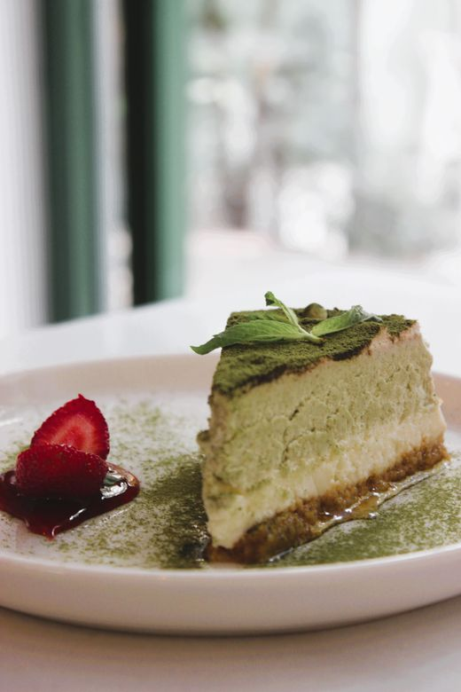
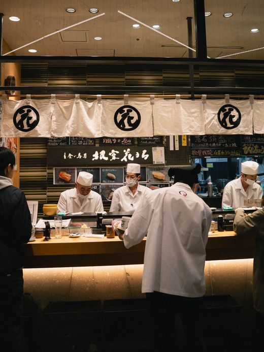

01 Sushi
Vinegared rice with fresh seafood, from conveyor-belt chains to ¥20,000 counters. Nigiri is the classic single piece.
Must-try: otoro (fatty tuna)
Tokyo dining guide · for international visitors
Thirty-three real, highly-rated restaurants in Tokyo — from casual counters to kaiseki. Ratings, practical notes and a mini phrasebook for eating out in Japan.
Browse by dish Sushi Ramen Izakaya Tempura Wagyu Soba Udon Okonomiyaki Curry Kaiseki Café
Featured: — counter sushi in Akasaka, popular with tuna lovers.
The basics of Japanese dining, in plain English.

Vinegared rice with fresh seafood, from conveyor-belt chains to ¥20,000 counters. Nigiri is the classic single piece.
Must-try: otoro (fatty tuna)

Wheat noodles in rich regional broths — tonkotsu (pork), shoyu (soy), miso. Slurping is a compliment.
Must-try: tonkotsu with extra chashu

Seafood and vegetables in a light batter, fried to order. Eat with tentsuyu sauce and grated daikon.
Must-try: anago (sea eel)

Japan's pub culture: small shared plates, yakitori skewers and drinks. Order a few things and pass them around.
Must-try: yakitori with cold sake

Multi-course haute cuisine that follows the seasons — tiny, beautiful dishes in a calm traditional room.
Must-try: the seasonal set menu

Intensely marbled Japanese beef, grilled at your table (yakiniku) or as sukiyaki. Look for A4/A5 grades.
Must-try: A5 tongue at yakiniku

Buckwheat soba (nutty, firm) and thick wheat udon (soft, comforting) — hot or cold by season.
Must-try: cold zaru soba in summer

Stone-ground green tea served traditionally or as a latte, paired with wagashi and parfaits.
Must-try: matcha parfait
A few simple rules that help you blend in.

Pronunciation is written to be read aloud. Even one phrase earns big smiles.
| Japanese | Sounds like | Meaning | Use it when… |
|---|---|---|---|
| すみません | su-mi-ma-sen | Excuse me / Sorry | getting a server's attention |
| おすすめは？ | o-susume wa? | What do you recommend? | you can't decide |
| 英語のメニューはありますか？ | ei-go no menyu wa a-ri-ma-su ka? | Do you have an English menu? | entering any restaurant |
| これをください | ko-re o ku-da-sai | This one, please | pointing at a menu or display |
| お勘定をお願いします | o-kan-jou o o-ne-gai-shi-ma-su | The check, please | ready to leave |
| おいしい！ | o-i-shi-i! | Delicious! | after the first bite |
| いただきます | i-ta-da-ki-ma-su | Thank you for the food (before eating) | before starting your meal |
| ごちそうさまでした | go-chi-so-u-sa-ma-de-shi-ta | Thank you for the meal (after eating) | after finishing your meal |
| アレルギーがあります | a-re-ru-gi-i ga a-ri-ma-su | I have allergies | showing this to staff when ordering |
| お水をください | o-mi-zu o ku-da-sai | Water, please | when you want water |
| お箸をください | o-ha-shi o ku-da-sai | Chopsticks, please | when chopsticks aren't provided |
| 辛くしないでください | ka-ra-ku shi-na-i-de ku-da-sai | Not spicy, please | when ordering spicy food |
| 持ち帰りできますか？ | mo-chi-ka-e-ri de-ki-ma-su ka? | Can I get takeout? | at a shop with takeout options |
| 予約はあります | yo-ya-ku wa a-ri-ma-su | I have a reservation | arriving at a reserved restaurant |
| 一人です | hi-to-ri de-su | Just me (table for one) | when asked how many people |
What happens when you sit down — and what to say back.
いらっしゃいませ！
i-ra-sha-i-ma-se!
Welcome!
Just smile and nod — no reply needed.
何名様ですか？
nan-mei sa-ma de-su ka?
How many people?
一人です (hi-to-ri de-su) = one person
二人です (futa-ri de-su) = two people
お席はこちらへどうぞ
o-se-ki wa ko-chi-ra e do-u-zo
Please follow me to your table
Follow them — they'll lead you to your seat.
ご注文はお決まりですか？
go-chu-mo-n wa o-ki-ma-ri de-su ka?
Are you ready to order?
Point at the menu and say これをください (ko-re o ku-da-sai) = "This one, please."
お会計ですね？
o-kai-ke-i de-su ne?
Just the bill?
Confirm and they'll bring the bill. Pay at the register or table.
Quick answers to what travelers ask most.
No. Most listings here have English or picture menus, and major stations have English signage. A smile and pointing work wonders.
Counter sushi, kaiseki and popular wagyu places — yes, often days ahead. Ramen shops, izakayas and curry houses are usually walk-in; expect a short wait at peak lunch (12:00–13:00).
Yes — filter by the “Vegetarian” tag. Note that dashi (stock) is usually made from bonito flakes, so strict vegans should ask about dashi.
Chains and newer restaurants usually accept Visa/Mastercard and mobile pay. Many small, traditional shops are cash-only.
No — never tip. It can cause confusion or even polite refusal. Great service is part of the job here.
Open any restaurant's details and tap “Show on map”. Each listing names its nearest station and walking time.